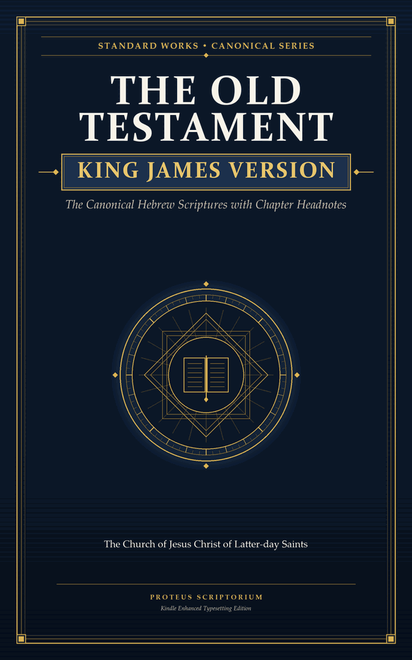
39 Canonical BooksThe Old Testament
The Authorized King James Version with Canonical 2013 Chapter Headnotes
The complete 39-book King James Version Old Testament with canonical 2013 chapter headnotes.
Curated, fine-press EPUB3 editions of the Latter-day Saint scriptural canon, intertextual collations, extra-canonical apocrypha, and 19th-century classics. Every volume is hand-crafted and validated with zero errors for Amazon Kindle Paperwhite and modern reading devices.

39 Canonical BooksThe Authorized King James Version with Canonical 2013 Chapter Headnotes
The complete 39-book King James Version Old Testament with canonical 2013 chapter headnotes.
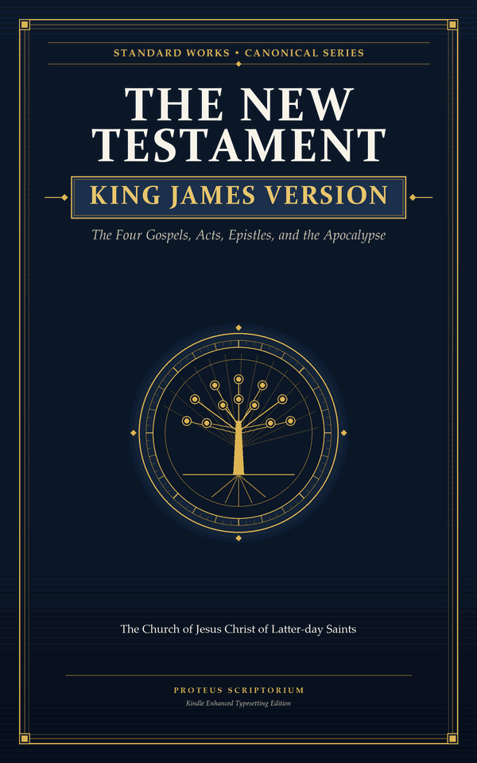
27 Canonical BooksThe Authorized King James Version with Canonical 2013 Chapter Headnotes
The complete 27-book King James Version New Testament with canonical 2013 chapter headnotes.
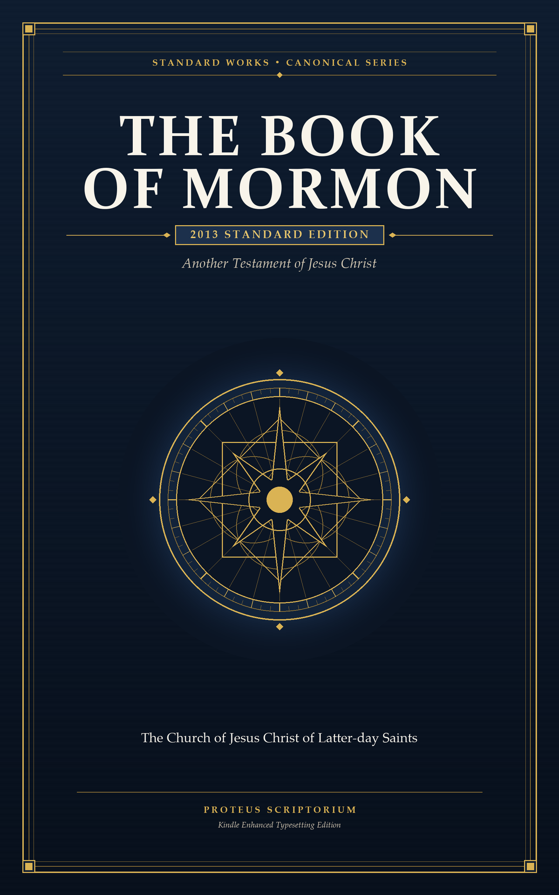
Standard EditionAnother Testament of Jesus Christ
The complete 2013 Standard Works edition with chapter synopses, Title Page, and Testimonies of the Three and Eight Witnesses.
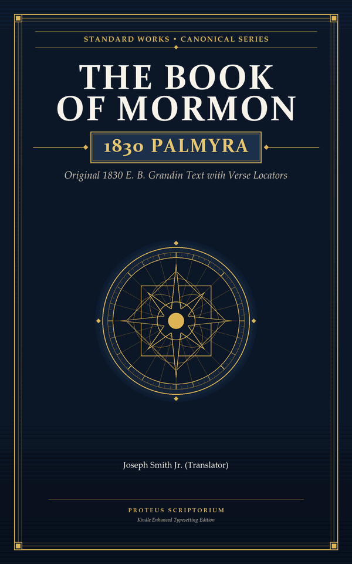
1830 Palmyra TextAn Account Written by the Hand of Mormon, Upon Plates Taken from the Plates of Nephi
The historic 1830 E. B. Grandin Palmyra printing with the Title Page, Witnesses, and canonical verse anchors.
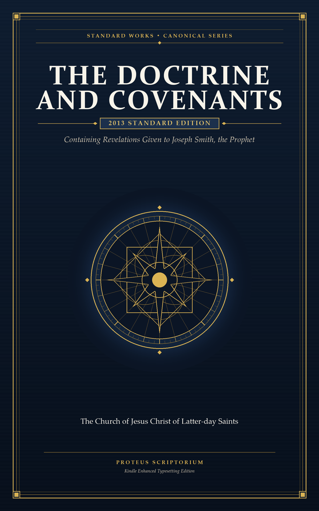
Standard EditionOf The Church of Jesus Christ of Latter-day Saints
The complete 2013 Standard Works edition of the Doctrine and Covenants with full introductory and section headnotes.
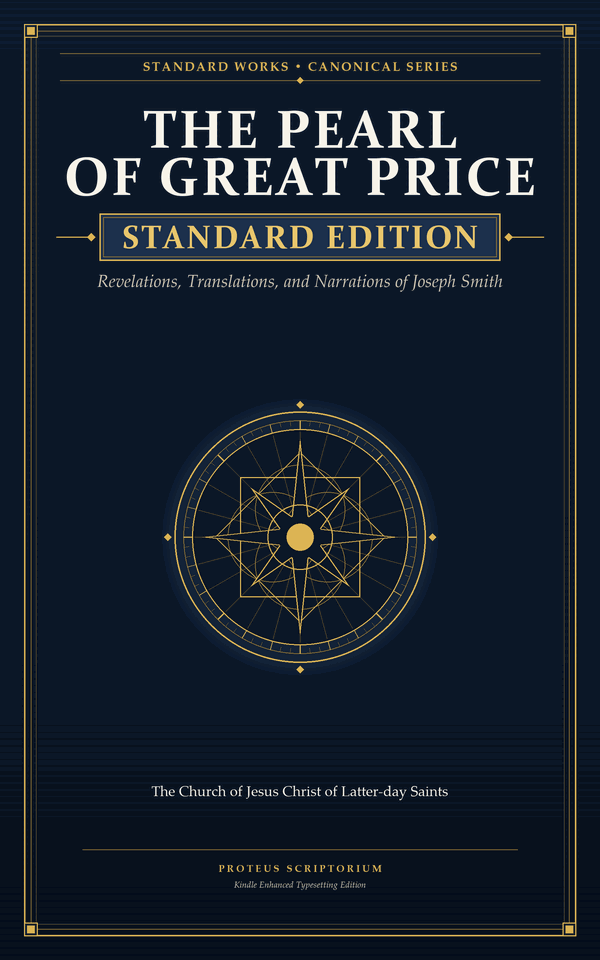
Standard EditionSelections from the Revelations, Translations, and Narrations of Joseph Smith
The complete 2013 Standard Works edition of the Pearl of Great Price with full chapter headnotes.
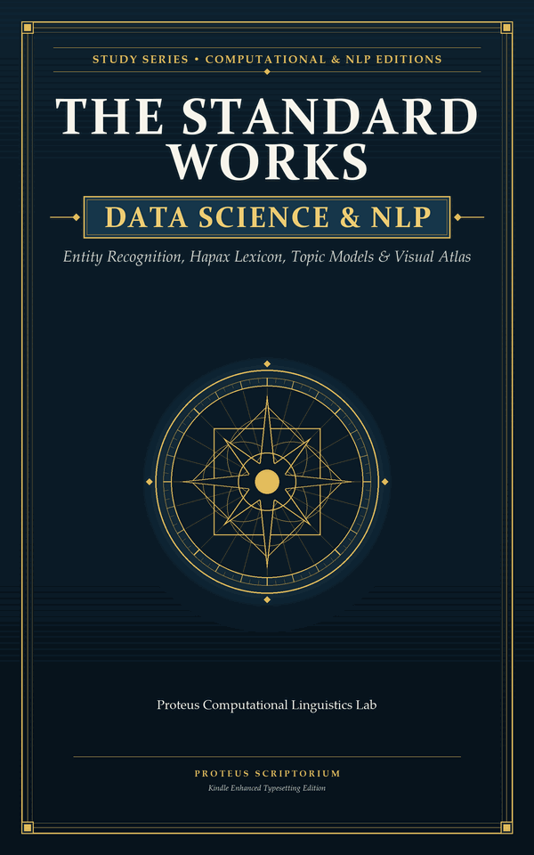
Data Science & NLPNLP, Named Entity Recognition, Hapax Legomena & Visual Analytics Across All Five Standard Works
Complete 5-volume Standard Works with inline NER (▲ Geo, ◈ Names, ▪ Peoples), ★1× Hapax Legomena, 6 data visual plates, and NLP chapter telemetry.
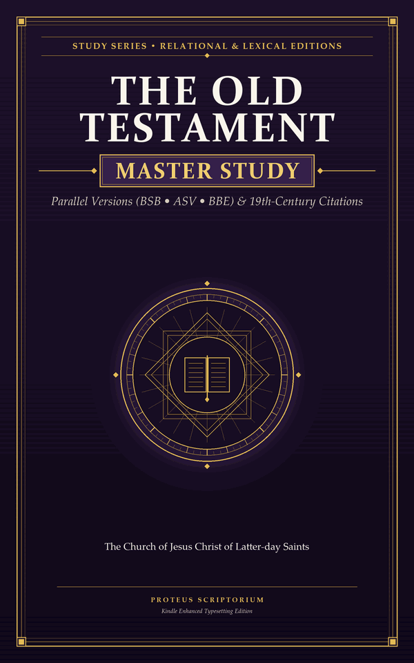
Parallel & Historical ApparatusKJV with Parallel Translations (BSB • ASV • BBE), Cross-References & 19th-Century Citations
The Old Testament with instant modal pop-ups for parallel translations (BSB, ASV, BBE), cross-references, and 19th-century sermon citations.
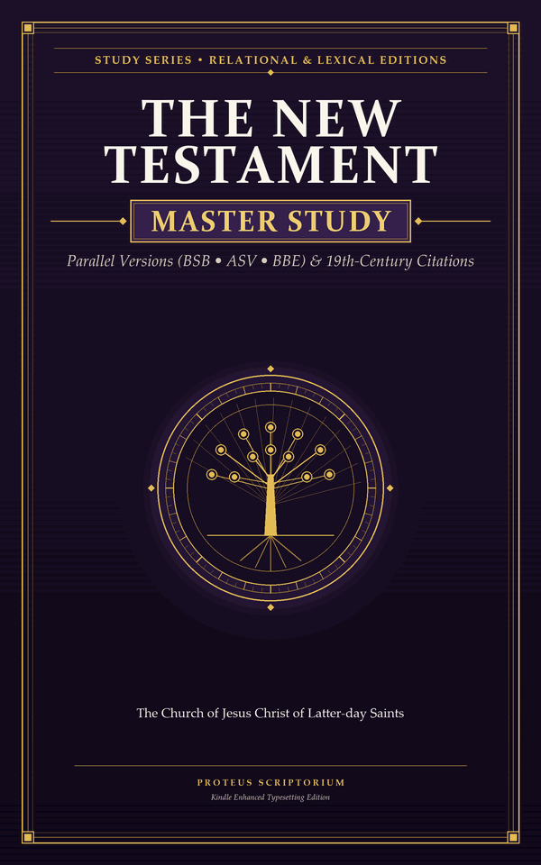
Parallel & Historical ApparatusKJV with Parallel Translations (BSB • ASV • BBE), Cross-References & 19th-Century Citations
The New Testament with instant modal pop-ups for parallel translations (BSB, ASV, BBE), cross-references, and 19th-century sermon citations.
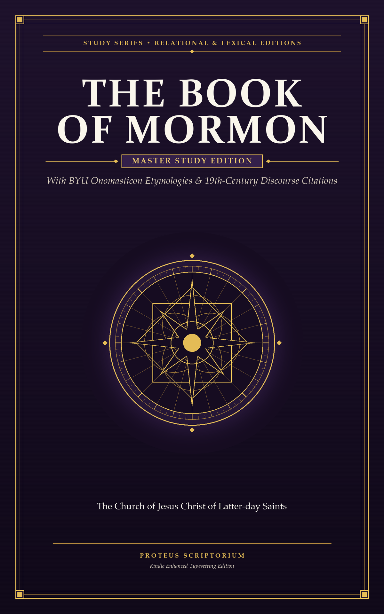
Flagship Study EditionWith BYU Onomasticon Etymologies & 19th-Century Discourse Citations
The flagship relational study volume uniting BYU Onomasticon name etymologies (◈) and 19th-century Restoration sermon citations ([★]).
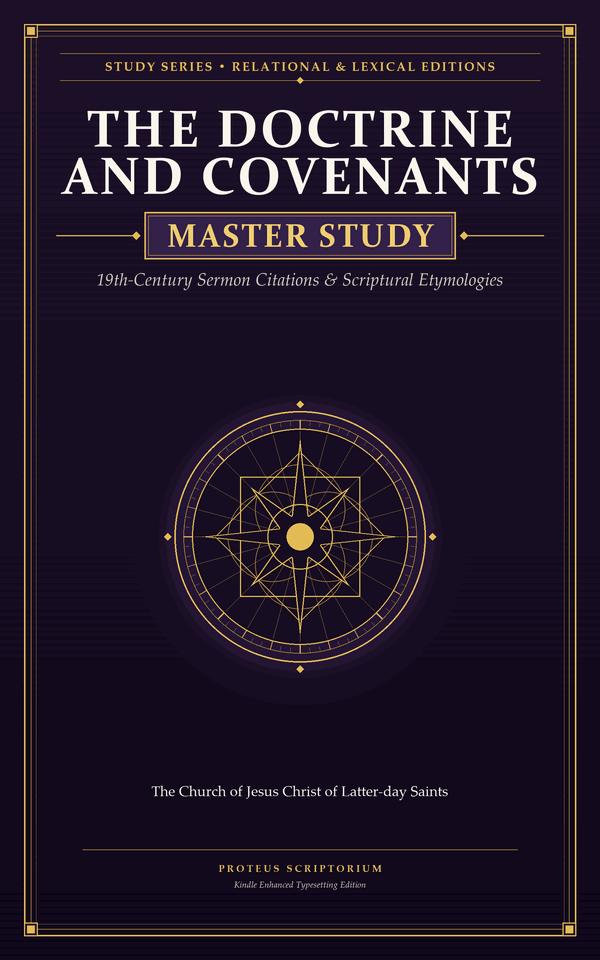
Historical Citation ApparatusRevelations of Joseph Smith with 19th-Century Citations ([★]) & Scriptural Etymologies (◈)
The 2013 Doctrine and Covenants with pre-1942 historical discourse citation badges ([★]) and Onomasticon etymology pop-ups (◈).
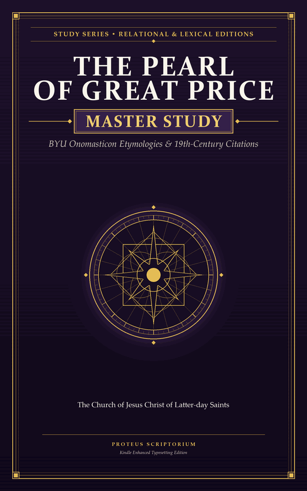
Onomasticon & Citation ApparatusMoses, Abraham & Joseph Smith History with BYU Onomasticon (◈) & Discourse Citations ([★])
The 2013 Pearl of Great Price with complete BYU Onomasticon etymologies (Kolob, Egyptus, Kokaubeam) and 19th-century citation badges.
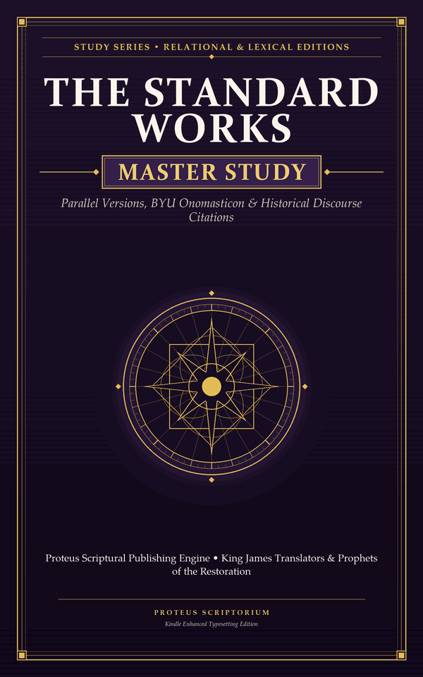
Grand Canon Master StudyComplete Five-Volume Canon with Parallel Bible Translations, BYU Onomasticon & 19th-Century Citations
The complete 5-volume Standard Works (87 books, 1,582 chapters) uniting parallel Bible translations, BYU Onomasticon, and 19,300+ citation badges.
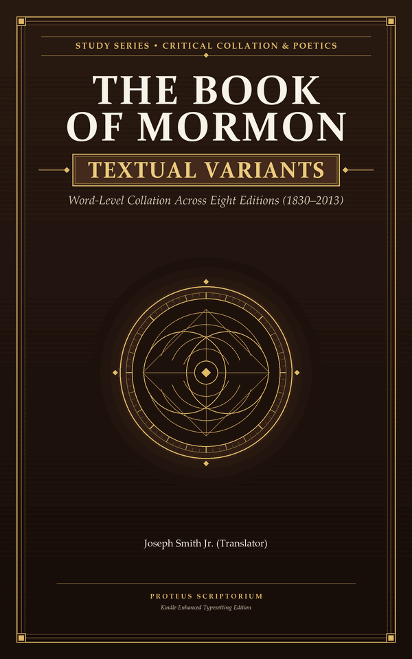
Critical ApparatusWord-Level Collation Across Eight Landmark Print Editions (1830–2013)
Comprehensive critical collation comparing the Book of Mormon text across eight historic editions from 1830 to 2013.
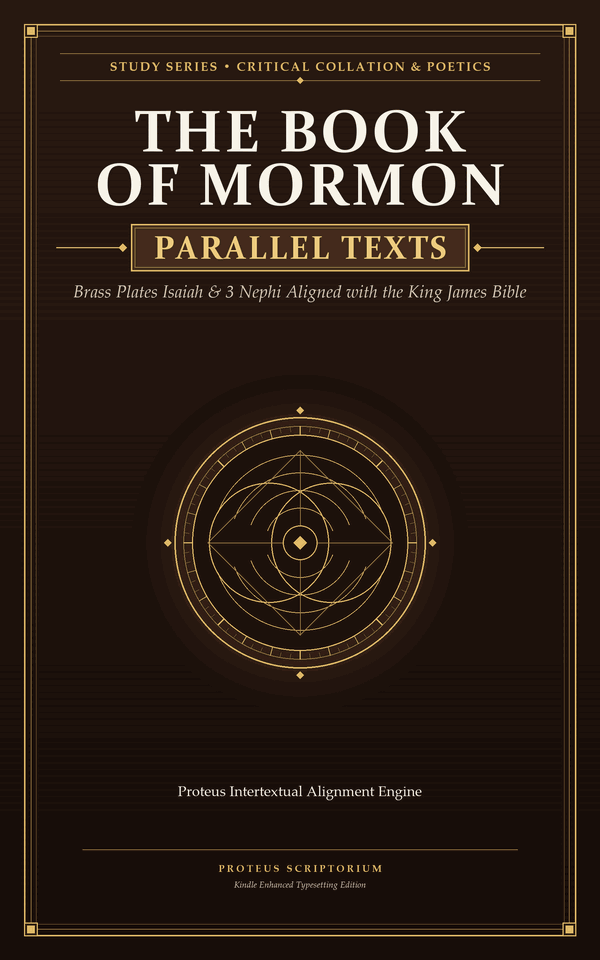
Intertextual CollationWord-Level Collation of Brass Plates Isaiah & 3 Nephi Against the King James Bible
Word-level textual collation of Brass Plates Isaiah (2 Nephi 12–24) and the Sermon at the Temple (3 Nephi 12–14) against the KJV.
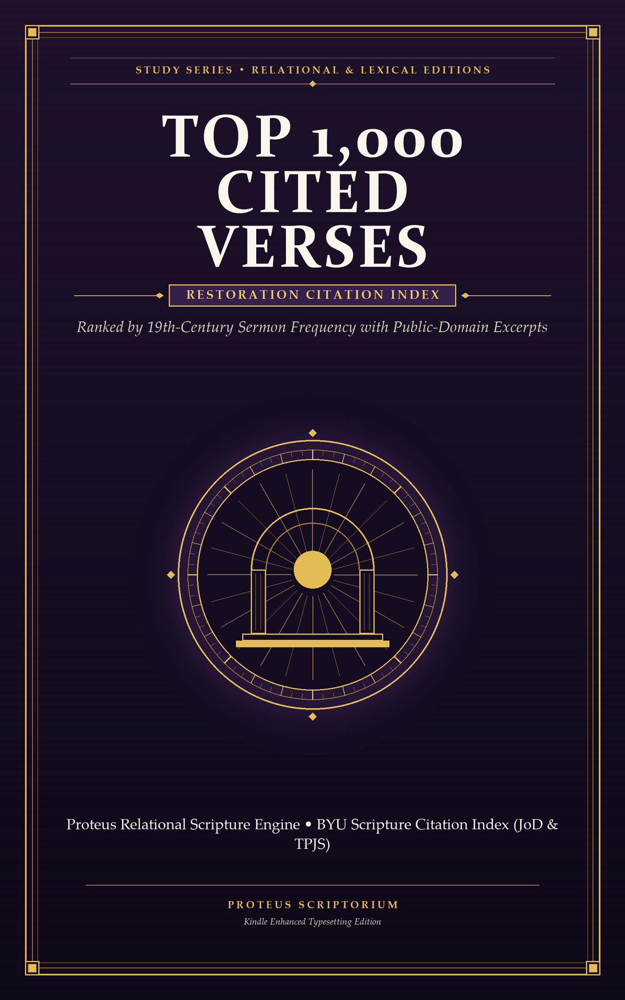
Historical AnalyticsRanked by 19th-Century Citation Frequency (1830–1886) with Public-Domain Sermon Profiles
The 1,000 most-quoted scriptures in 19th-century Restoration sermons (JoD & TPJS, 1830–1886), with pop-up discourse excerpts.
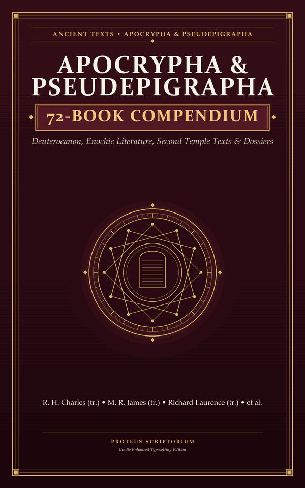
72 Ancient WorksDeuterocanon, Enochic Literature, Second Temple Texts & Provenance Dossiers
72 deduplicated public-domain ancient works (1,376 chapters) with a Source, Provenance & Historical Veracity dossier for every book.
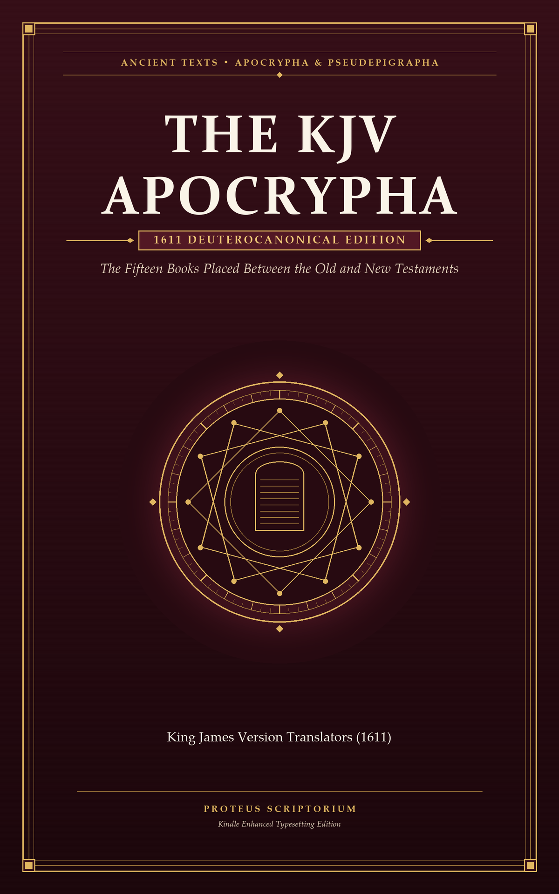
15 KJV BooksThe Fifteen Deuterocanonical Books of the 1611 Authorized King James Bible
All 15 Deuterocanonical books placed between the Old and New Testaments in the original 1611 King James Bible (including 1 & 2 Esdras).
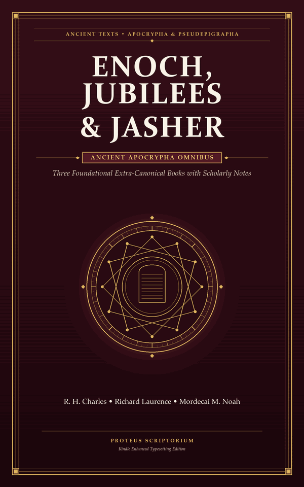
Patriarchal OmnibusPatriarchal & Second Temple Apocrypha with R. H. Charles & Richard Laurence Translations
Both historic translations of 1 Enoch (Charles 1917 & Laurence 1883), the Book of Jubilees (with 1,148 pop-up notes), and the Book of Jasher.
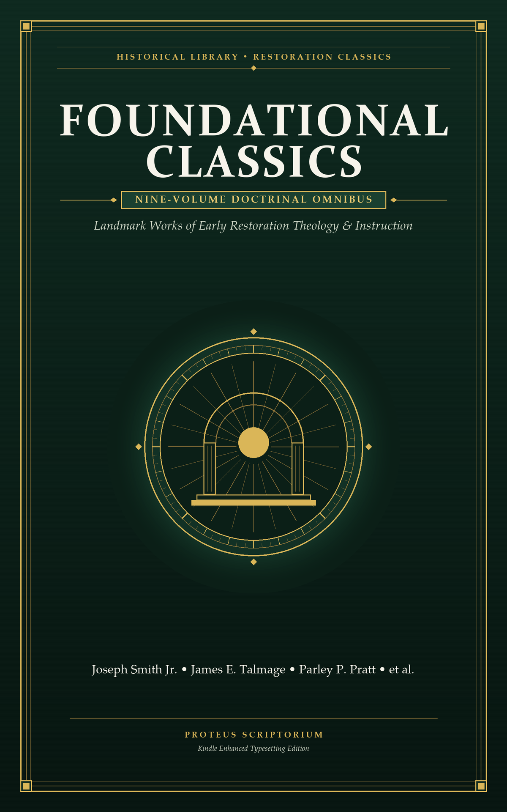
9 Doctrinal ClassicsNine Landmark Doctrinal Works with 3,276 Interactive Pop-Up Footnotes
Nine essential doctrinal books—including Lectures on Faith, Jesus the Christ, and Key to the Science of Theology—with 3,276 pop-up notes.
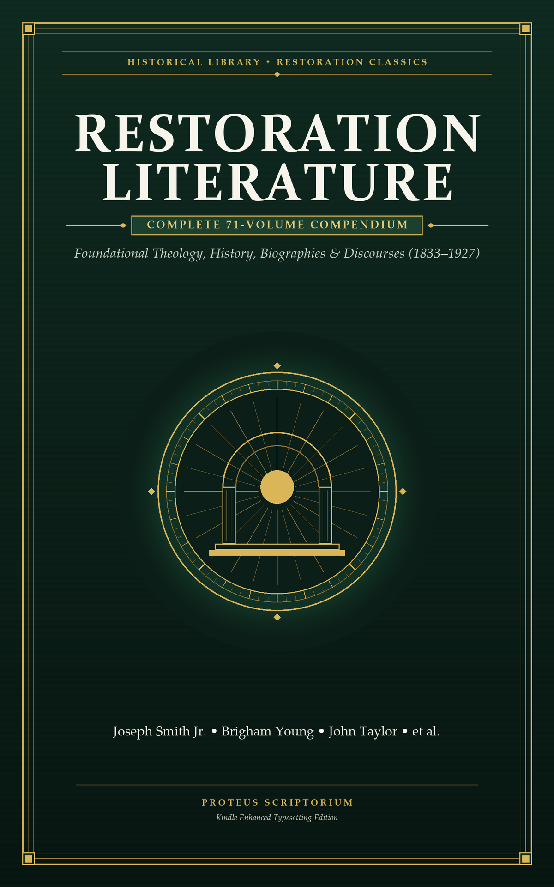
71-Book CompendiumAll 71 Public-Domain Historical Volumes of Early Latter-day Saint Theology & History
All 71 public-domain historical Restoration books (5.91M words, 1,982 chapters) organized into seven thematic divisions.
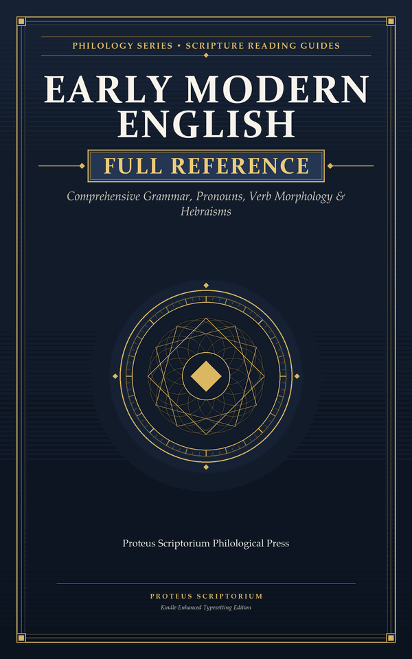
Comprehensive GuideComprehensive Grammar, Pronouns, Verb Inflections, Hebraisms & 100-Word Lexicon
In-depth philological companion to the grammar, syntax, Hebraisms, and lexicon of the King James Bible and Book of Mormon.
Try searching with another keyword or resetting the category filter.
All editions are packaged according to official W3C EPUB 3.3 standards with bidirectional pop-up footnote markup and high-resolution covers.
The fastest way to load onto your Kindle is via Amazon's official web tool:
.epub from this page..epub file. In 1–2 minutes, it will automatically sync to your Kindle library with covers and native pop-up notes!@kindle.com email address.
Seamless one-tap integration with iOS and macOS devices:
Compatible with all modern e-ink readers and mobile apps:
For research and reference on desktop computers:
What makes these editions fundamentally different from raw scans or automated web exports?
Every scripture cross-reference, textual variant, and Hebrew/Semitic etymology uses reciprocal <a epub:type="noteref"> and <aside epub:type="footnote"> pairs. Tap any note to see an instant modal card on your Kindle without losing your reading location.
Each volume carries a bespoke high-DPI (1200×1920) cover rendered with supersampled Lanczos filtering, classical Constantia tracked typography, large centerpiece medallion illustrations, and standardized series headers.
Every compiled volume passes the official W3C / IDPF Java EPUBCheck validation suite with zero errors and zero warnings. Valid XHTML5, verified internal links, and strict XML well-formedness.
Clean typographic normalizations: curly quotation marks, proper em-dashes with grammatical mid-sentence capitalization, non-breaking spaces before verse locators, and dark-mode resilient styling.